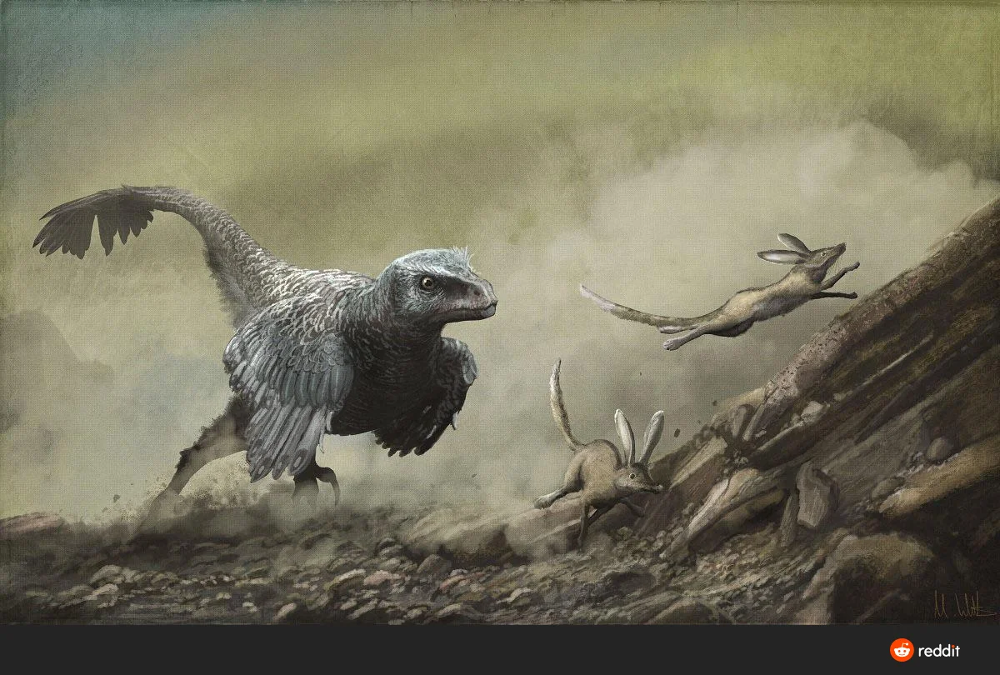

"Palaeontology is like detective work, piecing together the clues left behind by ancient animals." - Jack Horner
Palaeontology as a passion
Palaeontology is defined as the study of extinct flora and fauna. It is easy to think that it matters little today in a world where technology is moving forward. We can, however, learn many important metrics about earth's history and the creatures that once dominated it. It is something that will always help us to understand how the planet we live on has changed over time.
"How does palaeontology benefit society?"
| Benefits palaeontology brings to the table |
|
|---|---|
| Places where it can be studied |